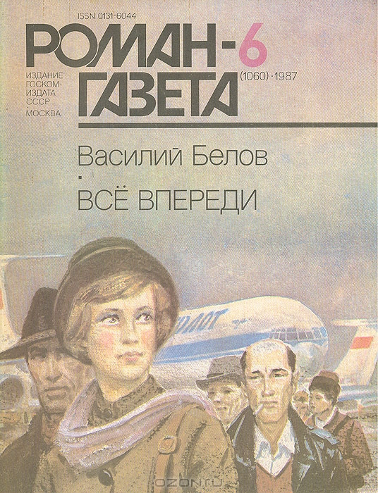

Библиография Белова
-
Плотницкие рассказы
Автор всеми своими корнями связан с селом. Близко знаком с крестьянским образом жизни, бытом, обычаями, традициями, нравами сельских жителей. Это составило сюжетную основу данных рассказов, где описаны отдельные события в сельской жизни
Читать online
 Купить книгу
Купить книгу
-

Рассказы о всякой живности
Замечательный русский писатель Василий Белов увлекательно рассказывает детям о том, как в обычной вологодской деревне вместе с людьми дружно живут домашние животные — коровы, кони, козы, куры, гуси, поросята, кошки, собаки, кролики… Рядом и вокруг — леса, реки, озера, поля, холмы, проселки, дали, небеса. В чащах и просторах — свои хозяева: медведи, лоси, волки, лисы, зайцы, тетерева, воробьи, синицы, вороны, хорьки… И у всех — особенные характеры, повадки и странности. Книга обращена прежде всего к детям и учит понимать язык живой природы, любить и познавать родную землю.
Читать online
Купить книгу
-

Привычное дело
Повесть «Привычное дело» (1966) Принесла широкое признание и известность автору. С нее начался триумф писателя как истинного художника слова. Эта повесть о русской деревне 50-х годов, о ее многотрудной, безрадостной жизни. В книге запечатлен русский народный характер, щедрый, добрый, терпеливый, решительный и драматичный.
Читать online
Купить книгу
-

Повседневная жизнь русского Севера
Известный русский писатель Василий Белов всю свою жизнь собирал устные рассказы, бывальщины, песни, пословицы, частушки, письма читателей, записки бывалых людей, предметы быта и материальной культуры Вологодской, Архангельской, Кировской областей России, работал в архивах, изучал разнообразные этнографические материалы и на основе всего этого богатства создал уникальную книгу о природном и философском круговороте крестьянской жизни русского Севера. Эта книга - научное и одновременно поэтическое сказание о красоте крестьянского лада.
Читать online
Купить книгу -

Воспитание по доктору Споку
В новую книгу Василия Белова вошли повести и рассказы, объединенные сюжетом и одним персонажем. Вопросы нравственной чистоты современного человека, социалистической морали и семейных отношений являются главными в этой книге.
Читать online
Купить книгу - 
Всё впереди
Начиная с повести "Привычное дело", принесшей Василию Белову всесоюзную известность, с книги рассказов "Воспитание по доктору Споку", за которую присуждена Государственная премия СССР, до последнего, вызвавшего ожесточенные споры, романа "Все впереди" писатель последовательно и бескомпромиссно исследует все, что касается современной семьи, этой первоосновной ячейки человеческого общества.
Читать online
Купить книгу